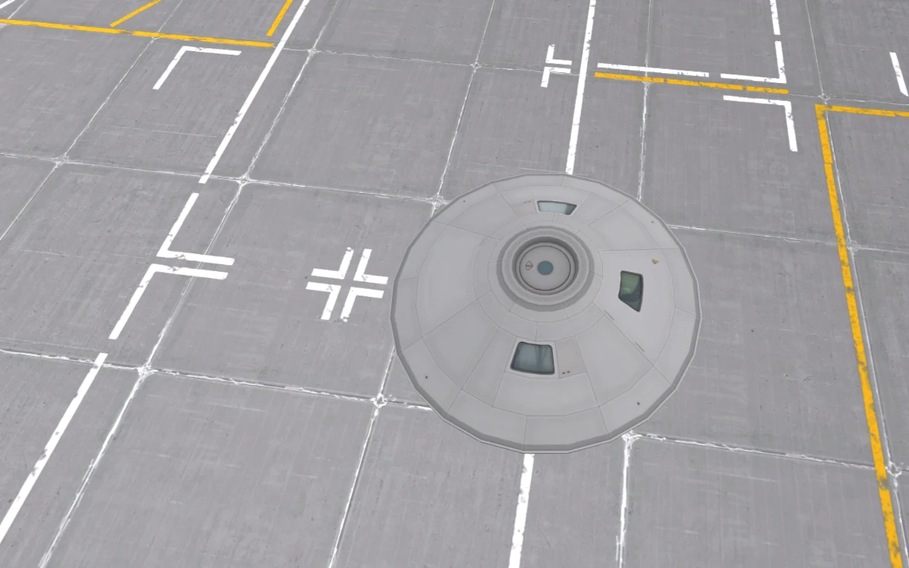
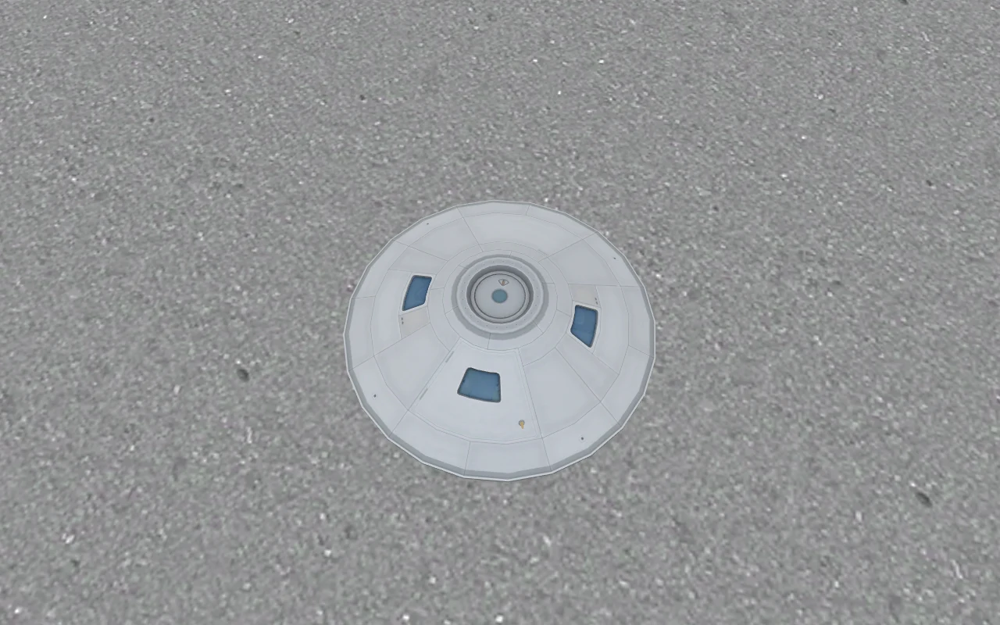
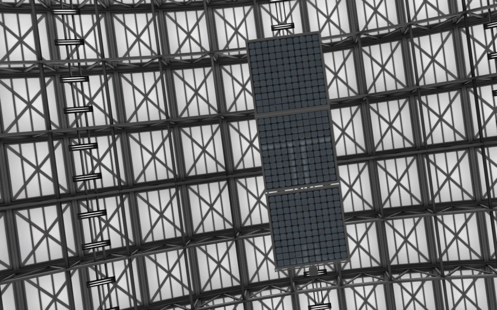
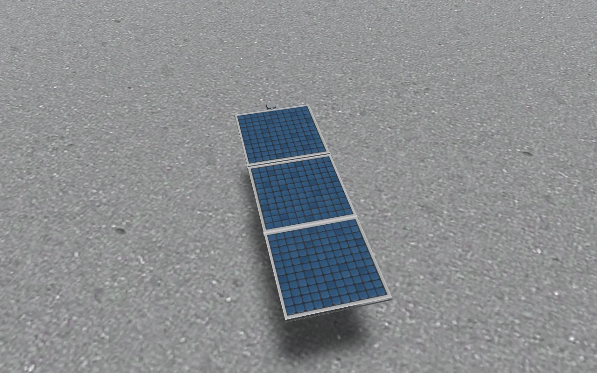

ShineFix
Catalog
Gallery
Evidence
← Back to supported mods
Fuji
Optics verified
Human tested
Version 1.4
Compatibility evidence
Original screenshot gallery
Parts
Fuji Crew Capsule
Kobushi Rescue Capsule


P-W42 1x3 Photovoltaic Panels


P-XX6 Orbital Module